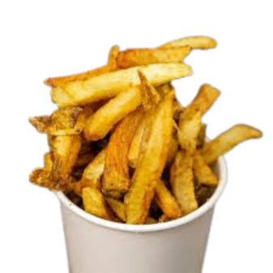
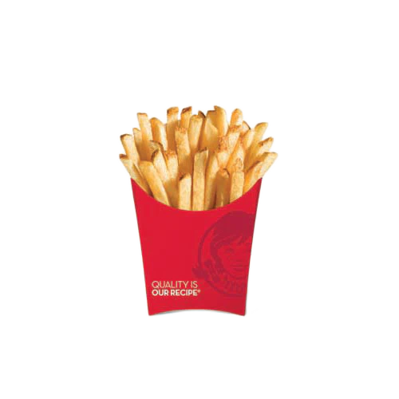
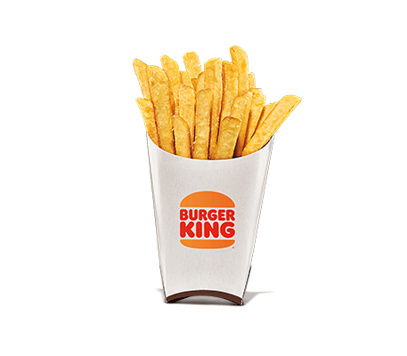
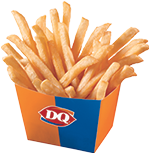
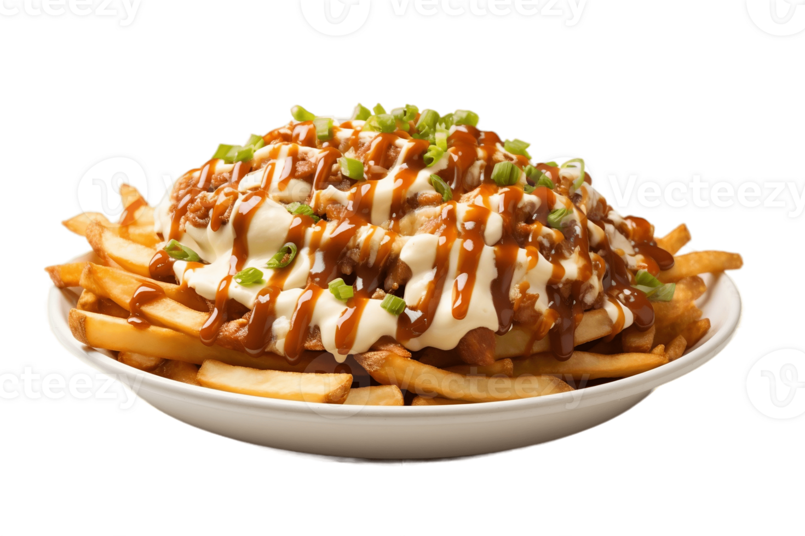
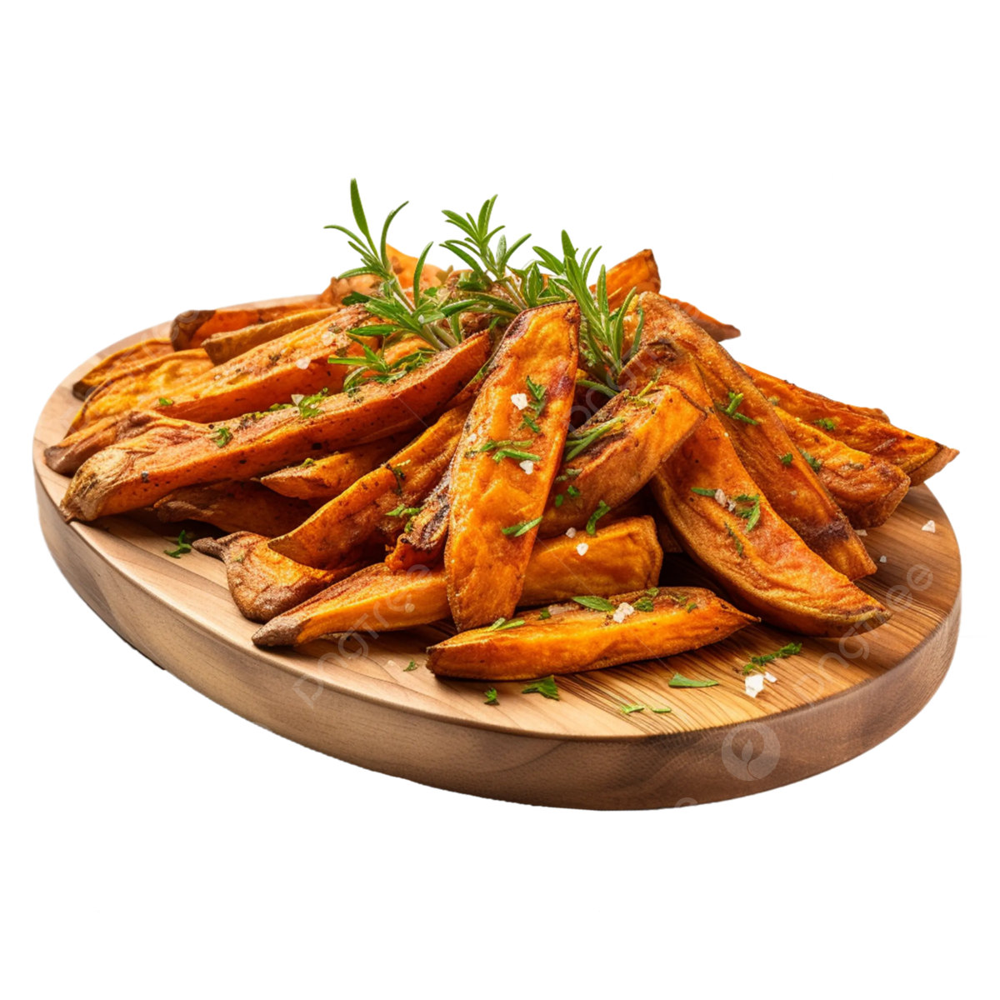
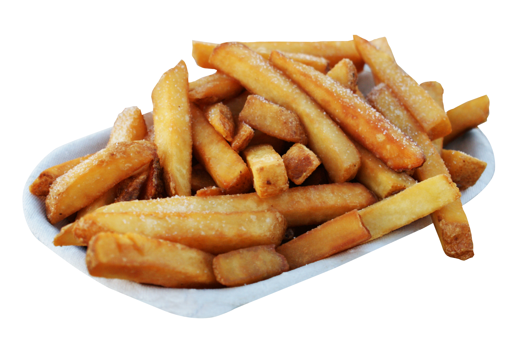

French Fries!

McDonald's Fries
McDonald's fries, what more can you ask for?

Five Guys Fries
Delicious Cajun seasoned fries made from fresh Idahoan Potatoes

Wendy's Fries
Crunchy, golden, natural and skin-on cut fries.

Burger King Fries
Golden brown, crispy, and fresh Burger King fries

KFC Fries
Fries with a mix of different herbs and spices
Potato Corner Fries
Perfectly seasoned fries with various flavors

Dairy Queen Fries
The perfect accomapaniment to your Dairy Queen ice cream.
Waffle Fries
Interesting shape, makes you think you're eating less fries. Better when seasoned
Crinkle Cut Fries
Not that different from your normal fries, the shape catches more seasoning though.

Loaded Fries
Fries with various toppings, but I prefer my fries plain or seasoned.

Sweet Potato Fries
I don't like sweet potato fries >:(

Steak Fries
Fries cut thickly and often served with steak as the name suggests